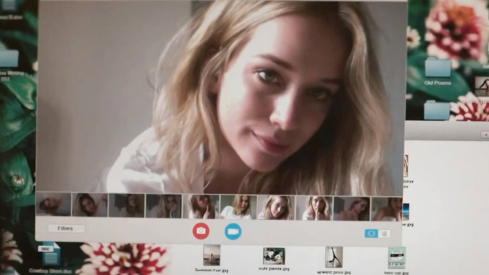
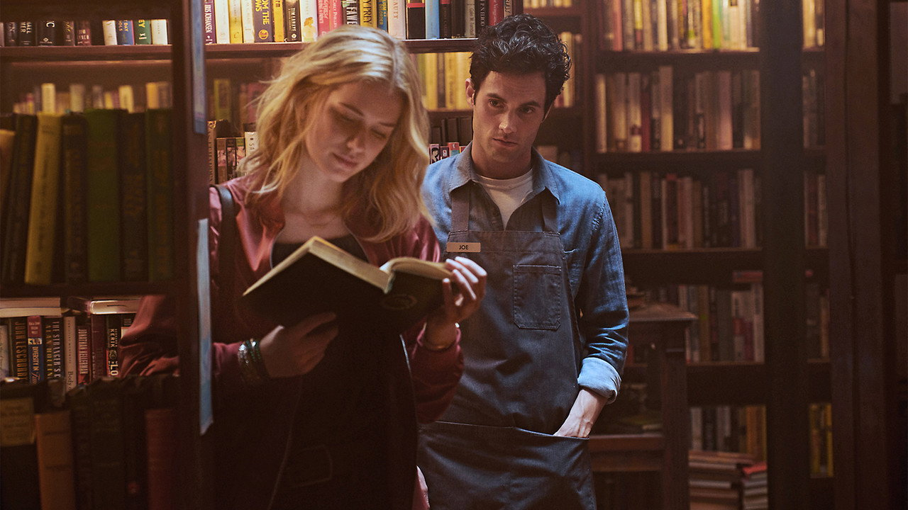
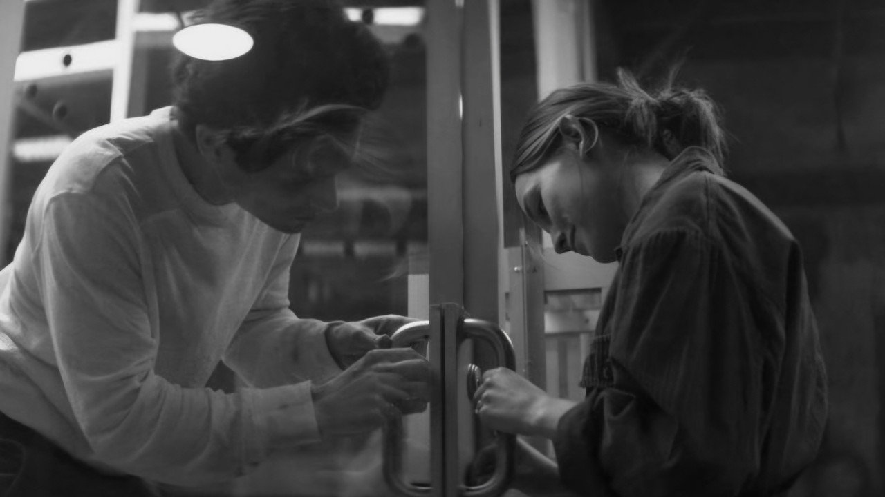
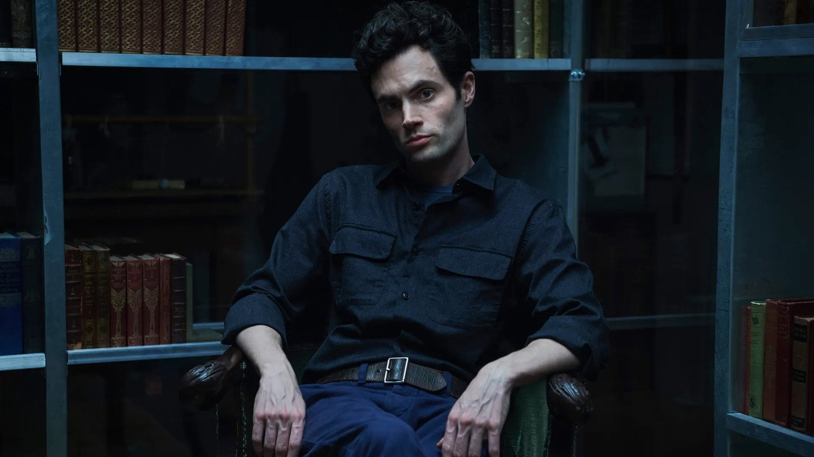
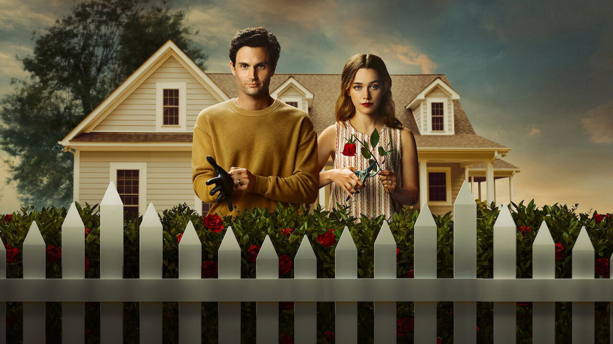
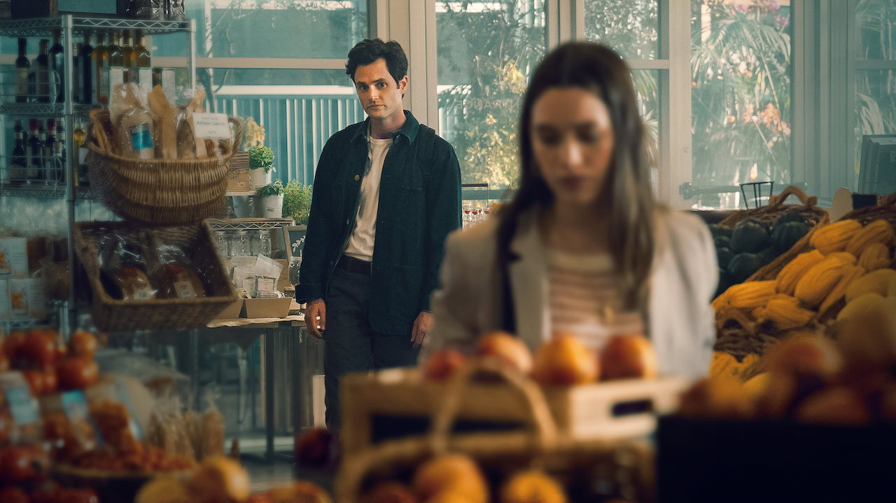
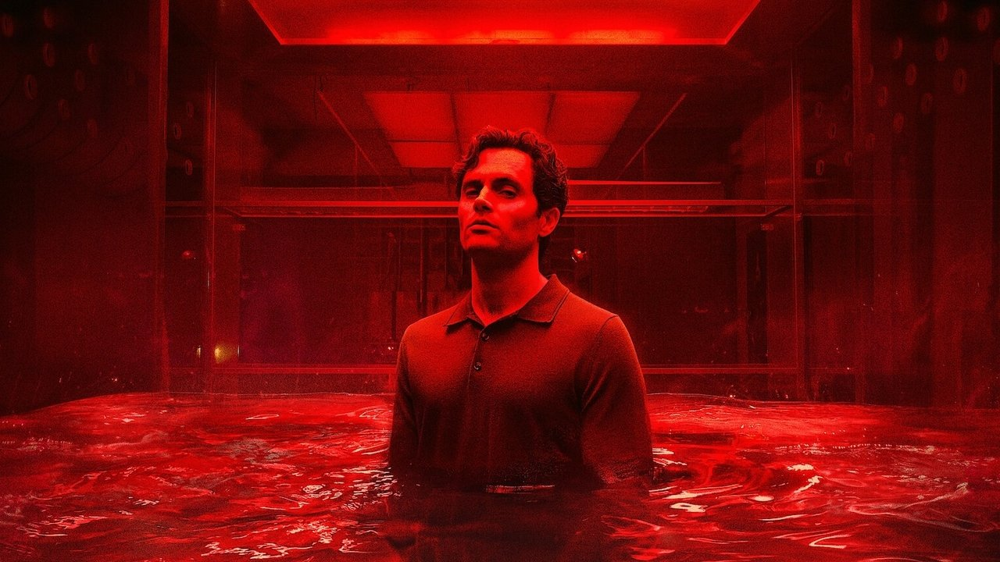

GUINEVERE BECK
ELIZABETH LAIL • NEW YORK
Şair adayı. Joe onu önce vitrinden, sonra telefonundan, en sonunda kafesten izledi. Kitabı, ancak ölümünden sonra basıldı.
Seni burada görmek ne güzel. Bir dizi sayfası daha açtın; başlığa baktın, belki kaşını kaldırdın. Acele etme. Ben beklemeyi iyi bilirim. Ben Joe. Joe Goldberg. Kitapçı işletirim. Klasikleri severim, insanları okurum. Özellikle senin gibi… dikkatli okuyucuları.
Dizim beş sezon sürdü. Dört şehir, dört büyük aşk, sayısını söylemeyeceğim kadar talihsizlik. İnsanlar bana "romantik" dedi, "canavar" dedi, ikisinin arasında karar veremedi. Sen de veremeyeceksin. Mesele de tam olarak bu.

You'nun bütün numarası, hikâyeyi katilin iç sesinden dinletmesi. Penn Badgley, Joe'yu öyle sıcak, öyle esprili, öyle "anlaşılır" oynuyor ki üçüncü bölümde kendini onun tarafını tutarken buluyorsun — sonra ne izlediğini hatırlayıp irkiliyorsun. Dizi bu irkilmeyi bilerek üretiyor: seyircinin romantik komedi reflekslerini bir cinayet hikâyesine bağlıyor ve refleksin ne kadar otomatik olduğunu yüzüne vuruyor.
Formül her sezon aynı ama şehir ve maske değişiyor: New York'ta kitapçı, Los Angeles'ta "uyanmış" eş adayı, banliyöde aile babası, Londra'da profesör. Joe her yerde aynı cümleyle başlıyor: "Merhaba, sen." Ve her seferinde aynı yere varıyor.

Mooney's'in bodrumunda, nadir kitapları nemden korumak için yapılmış camdan bir oda var. Joe oraya önce kitapları koydu. Sonra insanları. Kafes, dizinin en iyi buluşu: şeffaf, temiz, "koruyucu" — tıpkı Joe'nun kendine anlattığı hikâye gibi. İçindekini herkes görüyor ama kimse çıkamıyor.
Beş sezon boyunca kafes el değiştirdi: kapatan kapatılan oldu, kurtarıcı rehin düştü. Dizi finalde bu simetriyi sonuna kadar götürdü — ama orayı polaroidlerden sonraya saklıyorum.

Joe onlara "aşk" dedi. Savcı başka bir kelime kullanırdı. Dört kadın, dört sezon, dört farklı son:

Şair adayı. Joe onu önce vitrinden, sonra telefonundan, en sonunda kafesten izledi. Kitabı, ancak ölümünden sonra basıldı.

Joe'nun aynadaki yansıması: onun kadar tutkulu, onun kadar tehlikeli. Evlendiler, banliyöye taşındılar, birbirlerini öldürmeye çalıştılar. Kazanan Joe oldu — her zamanki gibi.
Kütüphaneci. Joe'nun ne olduğunu ilk anlayanlardan. Kafesten çıkışı, dizinin en zekice planlarından biriydi: ölü taklidi yapıp kızıyla birlikte sırra kadem bastı.

Galeri yöneticisi, sonra milyarder vâris. Joe'nun "temiz sayfa" hayalinin son kurbanı olmayı reddetti — ve onu bitiren hamlenin parçası oldu. Hayatta. Kazandı.
Her sezon, Joe'nun rafına bir cilt gibi dizildi. Üzerlerine gel (ya da dokun), sana içindekini fısıldayayım:
Beş sezon boyunca Joe'nun nasıl çalıştığını okudun: gözlem, not, sabır. Peki o bu sayfanın sahibi olsaydı, senin hakkında ne tutardı? Muhtemelen şöyle bir şey:
Endişelenme: hepsi tarayıcının zaten bildiği, bu sayfadan dışarı çıkmayan bilgiler. Joe olsa çıkarırdı ama ben Joe değilim. Muhtemelen.
Dizide herkesin kutusundan bir şey çıktı. Senin kutunda bir zarf var. İstersen önce üzerine adını yaz — istersen "sen" olarak kal. Sonra mühre dokun.
